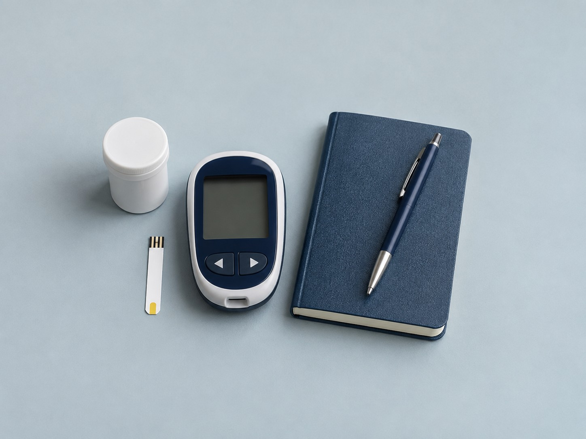

General medical consultations
Assessment of new symptoms, medical history and current medicines, with an explanation of the next steps.
MBBS
Medical Regd. No.: To be configured
English, Hindi, Marathi
General medical care that considers your symptoms, your history and your daily life.
Dr. Aditya Kapoor is a general physician offering consultations for adult health concerns, preventive care and ongoing medical conditions. A visit starts with the symptoms or questions that matter to you, followed by a discussion of your health history, medicines and daily routines. The doctor reviews available reports and examines you when needed before explaining the findings. Further tests or a specialist opinion may be discussed if they would help clarify the next steps. Care plans take account of your priorities and practical circumstances. Follow-up appointments allow time to review progress, test results and changes in your health. Clinic visits and online consultations are available when enabled by the practice; the doctor may recommend an in-person assessment when an examination is needed.
Consultations that consider your concerns, your routines and your existing care.
Assessment of new symptoms, medical history and current medicines, with an explanation of the next steps.
Ongoing consultations to review blood sugar records, medicines and individual care goals.
Review of blood pressure readings, current treatment and relevant health concerns.
Clinical assessment of fever and common infections, with investigations or referral when appropriate.
A discussion of personal health risks, screening needs and everyday health routines.
Review of continuing medical conditions, test results and coordination with other specialists.
A careful examination and an open conversation form the starting point for your medical care.
A full conversation about your concerns, routines and existing treatment.
Understand what is being considered, why it may be suitable and what comes next.
Follow-up visits make space to discuss changes and reassess the plan.
A clear path from your first question to a considered follow-up.
Choose a clinic visit or an online consultation and an available appointment time.
Discuss your concerns, health history, current medicines and relevant reports.
Talk through the assessment, suitable next steps and any questions you have.
Review progress with the doctor and discuss whether the plan needs to change.
Find the practice, get in touch or select an available appointment.
Evergreen Physician Practice
Clinic address to be configured
Mumbai, Maharashtra – 400050
Equipment used for general medical assessment and ongoing care.

A few useful details to help you prepare for your consultation.
A general physician helps with adult health concerns, new symptoms and ongoing conditions such as diabetes and high blood pressure. The doctor can also coordinate further assessment or specialist referral.
Bring your current medicine list, previous prescriptions, recent test reports and any home health readings you record. Make a note of your symptoms and the questions you want to discuss.
Online consultations are available when enabled by the practice. The doctor may recommend an in-person visit if a physical examination or further assessment is needed.
Yes. Tell the doctor about your concerns at the start of the visit so you can agree on priorities and arrange any follow-up that is needed.
The doctor will review your history and decide whether investigations are appropriate. Bring reports you already have; contact the practice about any specific preparation for your appointment.
This website and its chatbot are not emergency services. In an emergency, call 112 or go to the nearest hospital.
From My Social Media
Updates and information from the practice.